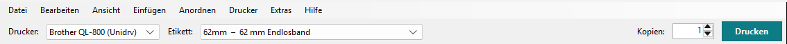

Das erste Etikett
Ein Regalschild auf 62-mm-Endlosband (z. B. DK-22205, in den USA DK-2205): Format wählen, Text schreiben, an die richtige Stelle schieben, drucken.
-
QL Label Maker starten
Im Startmenü auf QL Label Maker klicken. Oder in QL Label Formats auf Label Maker; ein Rechtsklick auf ein Format bietet Etikett mit diesem Format gestalten...
Er öffnet mit dem Drucker, der in QL Label Formats gewählt ist, und dessen Standard-Etikettenformat. Bei einem USB-Drucker wählt ein neues, leeres Etikett ein Format, das zur eingelegten Rolle passt.
-
Drucker und Etikett wählen
Oben bei Drucker den Drucker, bei Etikett das Etikett. In der Liste stehen zuerst Ihre Etikettenformate, dann Brothers Papiere für dieses Modell.

Auf Endlosband stellen Sie rechts bei Länge jede Länge ein, die der Drucker kann: Etikettenformate und eigene Längen.
-
Text einfügen
Links auf Text klicken. Oben links auf dem Etikett erscheint „Text“, und rechts steht der Cursor schon im Feld Text. Tippen Sie Ihren Text, zum Beispiel „Regal 3“.

Darunter stellen Sie Schriftart, Größe (pt) und Fett ein. Mehr dazu unter Text und Textrahmen.
-
An die richtige Stelle schieben
Ziehen Sie den Text mit der Maus. Er rastet an den Kanten und Mittellinien des Etiketts und am Rand des druckbaren Bereichs ein; eine rosa Hilfslinie zeigt das an. Mit den Anfassern wird ein einzeiliger Text größer oder kleiner.
Schraffierte Flächen kann der Drucker nicht bedrucken.
-
Drucken
Bei Kopien die Anzahl einstellen, dann auf Drucken klicken.

Bei einem USB-Drucker fragt der QL Label Maker vorher die eingelegte Rolle ab. Passt sie nicht zum Etikett, erfahren Sie das vor dem Druck. Mehr dazu unter Drucken.